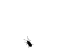

ScreenBug - The "bug on screen" gif replacement
Now in JavaScript & CSS3!
Hey there!
You know the "ancient" (1990's) animated bug on screen gif prank? THIS ONE →
Well, it's got company:
Let me proudly present the alternative crawling screen bug 2.0: it uses JavaScript & CSS3 so it works on most modern browsers:
- Firefox 3.5+ (ATM seems to be broken on Firefox17 (v17.x only) on GNU/Linux (only))
- Chrome 9+
- Opera 10.5+
- Safari 3.5+
- Internet Explorer 9+
You should find two bug specimens randomly crawling (or lurking) somewhere on your screen. They're fruit flies! :D
How to use?
Just copy the snippet below and put it in your webpage's HTML source (either in <head> or somewhere in the <body>). Repeat for more bugs.
<script src="https://screen-bug.googlecode.com/git/screenbug-min.js"></script>
Note, you may wish to use a somewhat superior alternative Bug by Auz.
That's it. Enjoy your crawling fella tricking your visitors.
Here's the readable source if you're interested.
Please contact me for any bugs/missing features you encounter, TYVM.
Released under WTFPL license.
Link back and relax.
k, bye
Dedicated to my sweetheart - Monika McCollister Pirc! I love you! * <3